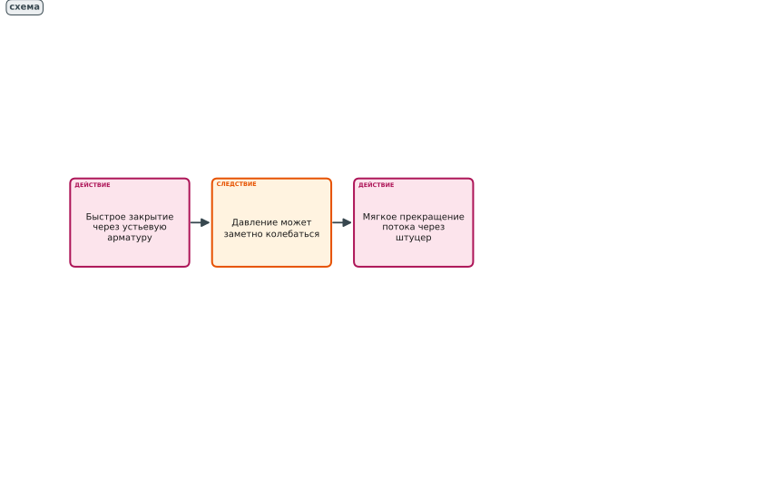
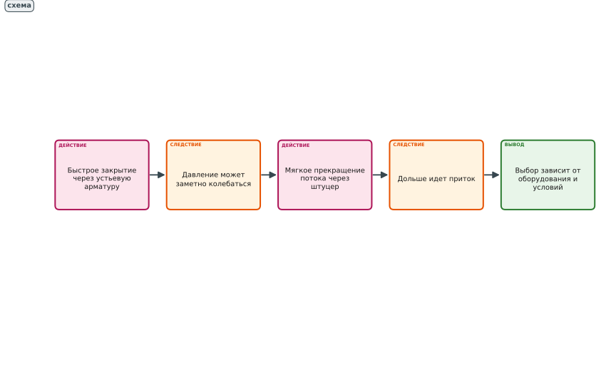

Быстрое перекрытие сокращает время притока, но вызывает колебания давления.
Мягкое использует штуцер, регулирующий поток, и занимает больше времени.
Пороговая идея. Сравнить время, риск колебаний давления и объем притока для двух способов. модель
Интерактив: как это происходит


1 / 6
Быстрее всегда лучше?
Допущения: Условная схема; блоки не задают временной масштаб или размеры оборудования..
Как это работает
Механизм
В быстром варианте закрывают линию, затем трубный превентор; после этого восстанавливают доступ до закрытой линии. Меньшее время быстрого перекрытия сокращает объем притока. стр. 315
«В этом случае задвижку 10 (см. рис. 4.16) штуцерной линии 9 закрывают, а затем закрывают и превентор 6 с трубными плашками.»
«Такое перекрытие скважины проводится быстро, поэтому проявление из пласта в скважину прекращается в течение короткого промежутка времени, и тем самым объем притока и давление нагнетания на устье скважины доводят до минимума.»
схема
Выбор зависит от условий и пределов оборудования.
Класс B · схема · нарисовано кодом · стр. 315
Практика
Быстрое перекрытие может дать значительные колебания давления. Колебания затрудняют определение контрольных параметров. стр. 315
«Однако при этом в скважине возникают значительные колебания давления.»
«Эти колебания могут привести к неправильному определению значений основных параметров контроля скважины (давлением нагнетания на устье скважины).»
Нюансы
Большой перепад давления затрудняет открытие задвижки. При мягком варианте поток сначала направляют через штуцер и манифольд в систему циркуляции. стр. 315
«Кроме того, при больших давлениях в скважине для открытия задвижки 10 требуется сообщение с нагнетательной стороной клапана, так как возникающий при этом перепад давления затрудняет открытие задвижки.»
«При обнаружении проявления задвижку 10 открывают и направляют поток через штуцер 5 и штуцерный манифольд 2 в циркуляционную систему буровой установки.»
После закрытия трубных плашек поток перекрывают через штуцер постепенно. Полное перекрытие достигается закрытием клапана линии. стр. 315
«После этого закрывают плашки трубного превентора 6 и медленно перекрывают скважину путем ввода в действие клапана в штуцере 5.»
Мягкое перекрытие дольше; за это время в ствол может войти больший объем флюида. На выбор влияют опыт и текущие условия. Сопоставляют плотность раствора и прочность породы у башмака. Учитывают допустимое давление у устья и скорость оборудования. стр. 315
«Недостатком "мягкого" перекрытия скважины является большая продолжительность процесса, и большие объемы жидкости из пласта поступают в скважину.»
«Выбор способа перекрытия производится с учетом опыта на данном месторождении и конкретных условий бурения (испытания) скважины, т.е. с учетом разницы между плотностями поступающего из скважины бурового раствора и прочностью породы пласта на разрыв у башмака колонны (эквивалентном плотности бурового раствора), максимально допустимого давления на устье скважины, скорости перекрытия противовибросового оборудования и гидравлических клапанов и т.д.»
Цифры и условия
Мягкое перекрытие дольше; за это время в ствол может войти больший объем флюида. стр. 315
На выбор влияют опыт и текущие условия. стр. 315
Сопоставляют плотность раствора и прочность породы у башмака. стр. 315
Учитывают допустимое давление у устья и скорость оборудования. стр. 315
Частая ошибка модель
✗Ошибка: Мягкое перекрытие всегда лучше быстрого.
✓На самом деле: Мягкое снижает резкие колебания давления, но требует времени, за которое может вырасти приток.
Что это значит для данных модель
Сравнить время, риск колебаний давления и объем притока для двух способов.
Вход
Текст главы и контекст текущей операции
Выход
Объяснение признака или этапа
Где ломается
Один сигнал не доказывает причину без контекста.
гипотеза Показания сопоставимы только при известном режиме работ.
Где здесь ручной труд специалиста
Входные данные
Текст главы и контекст текущей операции
Ручные шаги
Сверить показания и журнал операции.
Точки суждения
Сравнить время, риск колебаний давления и объем притока для двух способов.
Время
Данные о длительности ручной сверки в главе не приведены.
Типичные ошибки
Один сигнал не доказывает причину без контекста.
Аналогия модель
Аварийное отключение потока или управляемое сворачивание нагрузки.
Где аналогия перестаёт работать: Сжатие и движение флюидов дают колебания давления, а продолжающийся приток увеличивает объем в скважине.
Как это делается сейчас модель
За рабочими решениями обращаются к действующему регламенту и ответственному специалисту; этот узел объясняет учебный пример.
Глубже
Граница ИТ-аналогии модель
Сжатие и движение флюидов дают колебания давления, а продолжающийся приток увеличивает объем в скважине.
Новые понятия
Устьевая арматура (wellhead valves and fittings)
Клапаны и соединения устья для управления потоками. модель
Перекрытие скважины (well shut-in)
Герметизация скважины для контроля проявления и регистрации давления. модель
Мягкое перекрытие (soft shut-in)
Способ перекрытия с постепенным закрытием потока через штуцер. модель
Штуцер (choke)
Устройство для дросселирования потока и создания противодавления. модель
Трубные плашки (pipe rams)
Уплотняющие элементы превентора для перекрытия кольцевого пространства вокруг трубы. модель
Башмак колонны (casing shoe)
Нижний конец обсадной колонны, у которого учитывают прочность породы. модель
Штуцерный манифольд (choke manifold)
Система линий, арматуры и штуцеров для управления потоком из скважины. модель
Проверь себя
Один ответ
Верный ответ: Меньше время притока, но существеннее колебания давления
Все утверждения шага с дословной цитатой автора и страницей книги (по PDF).
В быстром варианте закрывают линию, затем трубный превентор; после этого восстанавливают доступ до закрытой линии. наблюдение
«В этом случае задвижку 10 (см. рис. 4.16) штуцерной линии 9 закрывают, а затем закрывают и превентор 6 с трубными плашками.»
Меньшее время быстрого перекрытия сокращает объем притока. наблюдение
«Такое перекрытие скважины проводится быстро, поэтому проявление из пласта в скважину прекращается в течение короткого промежутка времени, и тем самым объем притока и давление нагнетания на устье скважины доводят до минимума.»
Быстрое перекрытие может дать значительные колебания давления. наблюдение
«Однако при этом в скважине возникают значительные колебания давления.»
Колебания затрудняют определение контрольных параметров. наблюдение
«Эти колебания могут привести к неправильному определению значений основных параметров контроля скважины (давлением нагнетания на устье скважины).»
Большой перепад давления затрудняет открытие задвижки. наблюдение
«Кроме того, при больших давлениях в скважине для открытия задвижки 10 требуется сообщение с нагнетательной стороной клапана, так как возникающий при этом перепад давления затрудняет открытие задвижки.»
При мягком варианте поток сначала направляют через штуцер и манифольд в систему циркуляции. наблюдение
«При обнаружении проявления задвижку 10 открывают и направляют поток через штуцер 5 и штуцерный манифольд 2 в циркуляционную систему буровой установки.»
После закрытия трубных плашек поток перекрывают через штуцер постепенно. наблюдение
«После этого закрывают плашки трубного превентора 6 и медленно перекрывают скважину путем ввода в действие клапана в штуцере 5.»
Полное перекрытие достигается закрытием клапана линии. наблюдение
Мягкое перекрытие дольше; за это время в ствол может войти больший объем флюида. наблюдение
«Недостатком "мягкого" перекрытия скважины является большая продолжительность процесса, и большие объемы жидкости из пласта поступают в скважину.»
Учитывают опыт, условия, прочность породы у башмака, допустимое устьевое давление и скорость оборудования. наблюдение
«Выбор способа перекрытия производится с учетом опыта на данном месторождении и конкретных условий бурения (испытания) скважины, т.е. с учетом разницы между плотностями поступающего из скважины бурового раствора и прочностью породы пласта на разрыв у башмака колонны (эквивалентном плотности бурового раствора), максимально допустимого давления на устье скважины, скорости перекрытия противовибросового оборудования и гидравлических клапанов и т.д.»
Исходный текст урока
Стр. 315 · 4.2.14. ЛИКВИДАЦИЯ НЕФТЕГАЗОПРОЯВЛЕНИЙ ПРИ БУРЕНИИ СКВАЖИН
Перекрытие скважины может осуществляться при помощи устьевой арматуры. В этом случае задвижку 10 (см. рис. 4.16) штуцерной линии 9 закрывают, а затем закрывают и превентор 6 с трубными плашками. После этого задвижку 10 открывают, оставляя закрытой штуцерную линию. Такое перекрытие скважины проводится быстро, поэтому проявление из пласта в скважину прекращается в течение короткого промежутка времени, и тем самым объем притока и давление нагнетания на устье скважины доводят до минимума.
Стр. 315 · 4.2.14. ЛИКВИДАЦИЯ НЕФТЕГАЗОПРОЯВЛЕНИЙ ПРИ БУРЕНИИ СКВАЖИН
Однако при этом в скважине возникают значительные колебания давления. Эти колебания могут привести к неправильному определению значений основных параметров контроля скважины (давлением нагнетания на устье скважины). Кроме того, при больших давлениях в скважине для открытия задвижки 10 требуется сообщение с нагнетательной стороной клапана, так как возникающий при этом перепад давления затрудняет открытие задвижки.
Стр. 315 · 4.2.14. ЛИКВИДАЦИЯ НЕФТЕГАЗОПРОЯВЛЕНИЙ ПРИ БУРЕНИИ СКВАЖИН
Поэтому наряду с использованием устьевой арматуры производят перекрытие скважины с использованием штуцеров. В данном случае для "мягкого" перекрытия скважины задвижку 10 закрывают, а клапаны 7, 4 открывают. При обнаружении проявления задвижку 10 открывают и направляют поток через штуцер 5 и штуцерный манифольд 2 в циркуляционную систему буровой установки. После этого закрывают плашки трубного превентора 6 и медленно перекрывают скважину путем ввода в действие клапана в штуцере 5. Окончательное перекрытие скважины достигается закрытием клапана 4.
Стр. 315 · 4.2.14. ЛИКВИДАЦИЯ НЕФТЕГАЗОПРОЯВЛЕНИЙ ПРИ БУРЕНИИ СКВАЖИН
Недостатком "мягкого" перекрытия скважины является большая продолжительность процесса, и большие объемы жидкости из пласта поступают в скважину. Это затрудняет контроль за скважиной.
Стр. 315 · 4.2.14. ЛИКВИДАЦИЯ НЕФТЕГАЗОПРОЯВЛЕНИЙ ПРИ БУРЕНИИ СКВАЖИН
Выбор способа перекрытия производится с учетом опыта на данном месторождении и конкретных условий бурения (испытания) скважины, т.е. с учетом разницы между плотностями поступающего из скважины бурового раствора и прочностью породы пласта на разрыв у башмака колонны (эквивалентном плотности бурового раствора), максимально допустимого давления на устье скважины, скорости перекрытия противовибросового оборудования и гидравлических клапанов и т.д.